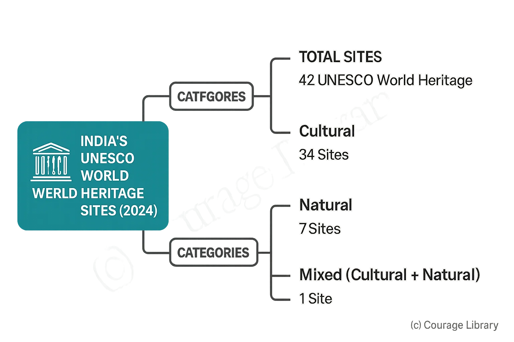

SSC CGL - Detailed Guide 2025
Self-Paced Course
UNESCO World Heritage Sites (India)
Reference: Lucent GK, NCERT Class 6–12
India’s UNESCO World Heritage Sites (as of 2024)
India has 42 UNESCO World Heritage Sites:
- Cultural: 34 sites
- Natural: 7 sites
- Mixed (Cultural + Natural): 1 site

1. Cultural Heritage Sites
Architectural brilliance, historical significance, and cultural traditions.
| Site | Location | Significance |
|---|---|---|
| Taj Mahal | Uttar Pradesh | White marble mausoleum built by Shah Jahan; symbol of love |
| Hampi | Karnataka | Capital of Vijayanagara Empire; Dravidian temples & market streets |
| Khajuraho Temples | Madhya Pradesh | Erotic sculptures; Nagara-style temples of Chandela dynasty |
| Ajanta Caves | Maharashtra | Buddhist rock-cut caves; paintings depicting Jataka tales |
| Ellora Caves | Maharashtra | Rock-cut caves of Hindu, Buddhist, and Jain religions; Kailasa temple |
| Sun Temple, Konark | Odisha | 13th-century chariot-shaped temple dedicated to Surya (Sun god) |
| Fatehpur Sikri | Uttar Pradesh | Capital of Akbar; blend of Persian and Indian architecture |
| Qutub Minar & Humayun’s Tomb | Delhi | Indo-Islamic architectural heritage |
| Rani ki Vav | Gujarat | Stepwell in Patan; Maru-Gurjara style; female patronage of architecture |
| Great Living Chola Temples | Tamil Nadu | Exemplify Tamil temple architecture under Chola dynasty |
Note: Cultural sites are India’s strength in UNESCO listings.
2. Natural Heritage Sites
Ecologically significant areas, rich in biodiversity and geological features.
| Site | State | Highlights |
|---|---|---|
| Kaziranga National Park | Assam | UNESCO-listed for one-horned rhinoceros and floodplain ecosystem |
| Keoladeo National Park | Rajasthan | Former royal hunting ground; now a bird sanctuary of international importance |
| Sundarbans National Park | West Bengal | Largest mangrove forest; habitat of Royal Bengal Tiger |
| Western Ghats | Maharashtra to Kerala | Biodiversity hotspot with endemic species |
| Nanda Devi & Valley of Flowers | Uttarakhand | Alpine meadows and rare Himalayan flora; home to snow leopard, musk deer |
Note: Natural sites are often biodiversity hotspots, protected under Indian environmental laws.
3. Mixed Heritage Site
Sites with both cultural and natural significance.
| Site | State | Features |
|---|---|---|
| Khangchendzonga National Park | Sikkim | Sacred landscape; rich flora & fauna; includes India’s highest peak |
India’s first and only Mixed Heritage Site (listed in 2016).
Quick Exam Facts:
- India’s first UNESCO sites (1983): Ajanta Caves, Ellora Caves, Agra Fort, Taj Mahal.
- Ellora: Only site with Hindu, Buddhist, and Jain monuments.
- Santiniketan (West Bengal) added in 2023 as a cultural landscape.
- Ramappa Temple (Telangana) listed in 2021 for its engineering brilliance.
Developed By Jan Mohammad
Next
Start Your SSC CGL Journey Now!
Join Courage Library to experience disciplined study and expert support.
Be a Couragian!